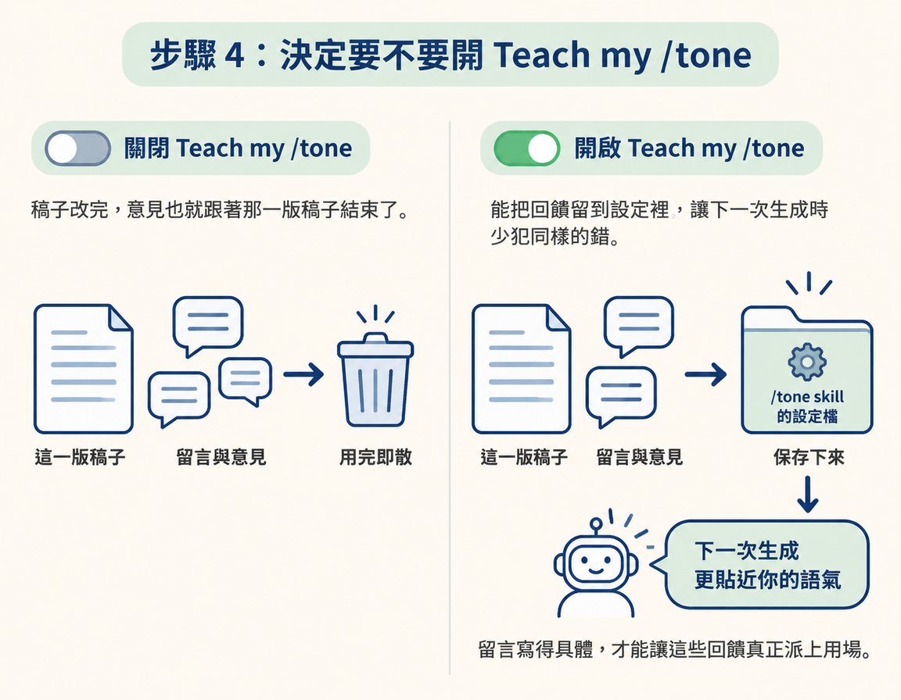

學會在腳本上畫重點、留言，再把所有留言一次交給 agent 修改；也可以用 Teach my /tone，讓這些回饋同時改善你的 tone skill。/tone 是用來描述你寫作語氣的 skill，能幫助 agent 寫出更像你的內容。
在整條流程裡，這一步接在腳本產出之後，負責把你的修改意見送回 agent。你手上要有一批腳本；做完後，會得到一輪改好的腳本，也可以把回饋留進 /tone，讓下一批稿子更貼近你的語氣。
重點是「留言、複製、貼回」這個迴路，不必一支一支開對話慢慢修改。接下來就照順序操作。
Hook 是腳本開頭用來抓住讀者注意力的一句話。若 /hooks 和 /tone 已經調得不錯，你不一定要逐支檢查每個 hook。課程建議，可以先挑一個順眼的 hook，再快速掃過腳本；想自己改的句子，也能直接在頁面上編輯。
預期會看到：每支腳本都有一個你選定的 hook；沒有改過的地方則維持原樣。
看到不像你會說的句子，就用游標把它畫起來，畫面會跳出留言框。例如，覺得某個 hook 太長，可以留言：「這句太長，砍成一行。」你的留言會收集在一旁的名單裡，方便之後查看。
如果打字很慢，可以用語音工具口述留言。課程提到 Aqua Voice 和 Wispr Flow。口述能省下打字時間，也比較容易用自然、像平常說話的方式描述意見；這對後面調整語氣很有幫助。
預期會看到：被畫重點的文字旁出現留言標記，一旁的名單也多出一則意見。
看完腳本、留完意見後，按「Copy comments for all scripts」。系統會把整批留言整理成一段指令，複製到剪貼簿。你不必一則一則抄，也不用分別對 agent 下指令。
預期會看到：剪貼簿裡有一段彙整所有留言的內容，可以貼回 agent。
頁面上有一個「Teach my /tone」開關。打開後，agent 修改腳本時，也會根據同一批留言調整你的 /tone skill。像是「太長」、「太官腔」、「這不是我會說的話」這類意見，都能成為之後寫作時的依據。
一般來說，稿子改完，意見也就跟著那一版稿子結束了。開啟這個選項，則能把回饋留到設定裡，讓下一次生成時少犯同樣的錯。因此，留言寫得具體，才能讓這些回饋真正派上用場。

回到 agent，貼上剛才複製的內容並送出。agent 會依照留言修改整批腳本，不需要你一支一支下指令。
預期會看到：agent 說明修改了哪些腳本、改了什麼。接著打開 RUBRIC Scripts，確認版本已更新。
如果你想調整 app 本身，例如希望 caption 短一點，或每次拿到四個 hook 而不是三個，可以直接請 agent 修改。以下是課程提供的模板：
"""Change my RUBRIC Scripts: [for example, give me 4 hooks instead of 3, make every caption shorter, or remove the windows I don't use].
1. Run /rubricscripts first so you know how the app is built.
2. Tell me in plain words what you'll change, and wait for my go.
3. Make the change, keep all my scripts and comments as they are, and give me the link to check it."""這段模板分成三步：
/rubricscripts，讓 agent 了解 app 的組成方式。先確認改動內容，能讓你有機會在執行前喊停；明確要求保留資料，則能避免腳本和留言在修改時被移除。
這一步的核心是回饋迴路：畫重點、留意見，按「Copy comments for all scripts」複製整批留言，再貼回 agent 一次修改全部腳本。開啟「Teach my
/tone」後，同一批留言也會用來改善 tone skill。留言要具體、用自己的話寫；錄之前唸一遍，卡住的句子就是值得修的地方。
做完後，你會有一批依照留言更新的腳本。最後一節會把這些腳本送上一頁長稿，方便一次錄完整批。